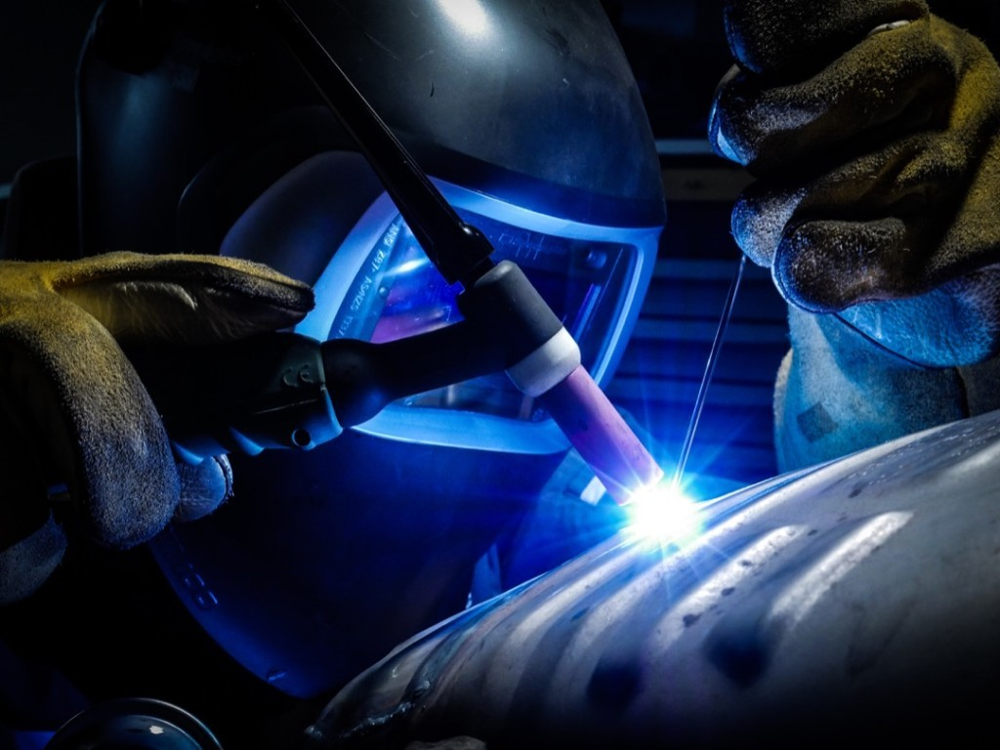
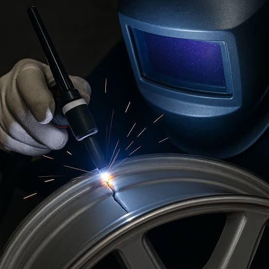

Аргонная сварка
Восстанавливаем локальные повреждения литых дисков: трещины, сколы, кромку и дефекты после ударов.
Ремонт после осмотра повреждения
Перед сваркой мастер оценивает место трещины, нагрузку на диск и возможность безопасного восстановления. После ремонта диск проверяется и готовится к правке или балансировке.
- Осмотр трещин, сколов и кромки
- Подготовка зоны ремонта
- Аргоно-дуговая сварка
- Зачистка сварного шва
- Покраска
- Контроль перед шиномонтажом


